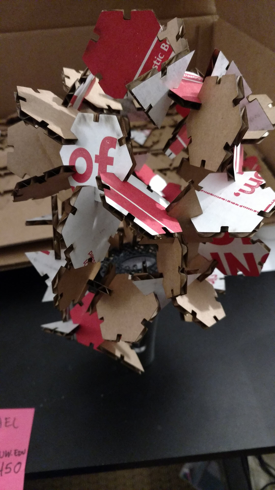
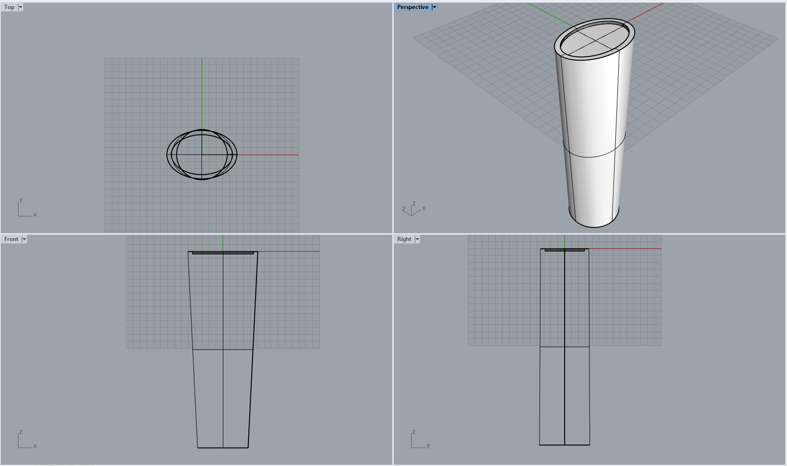
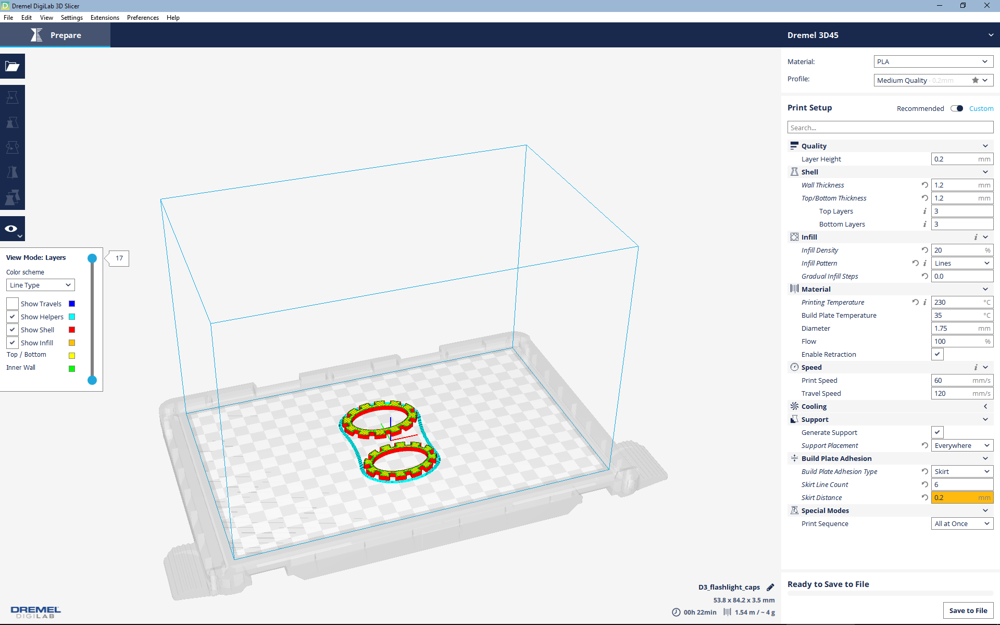
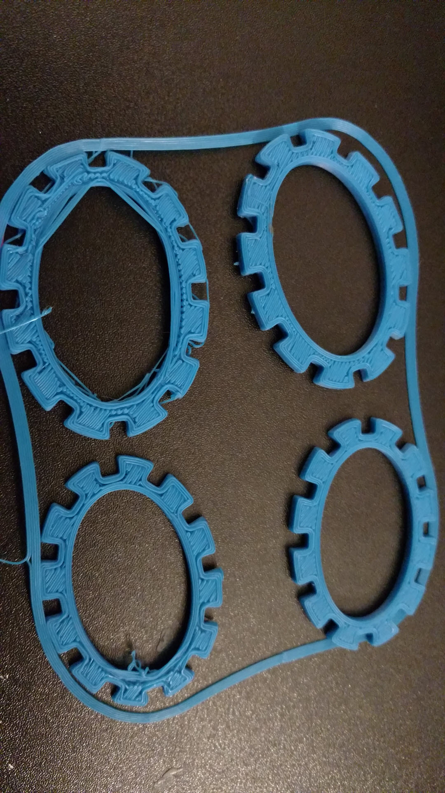
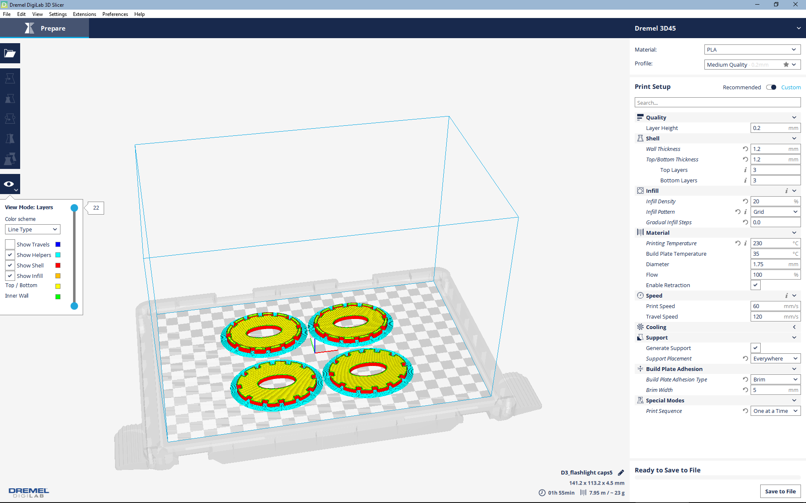
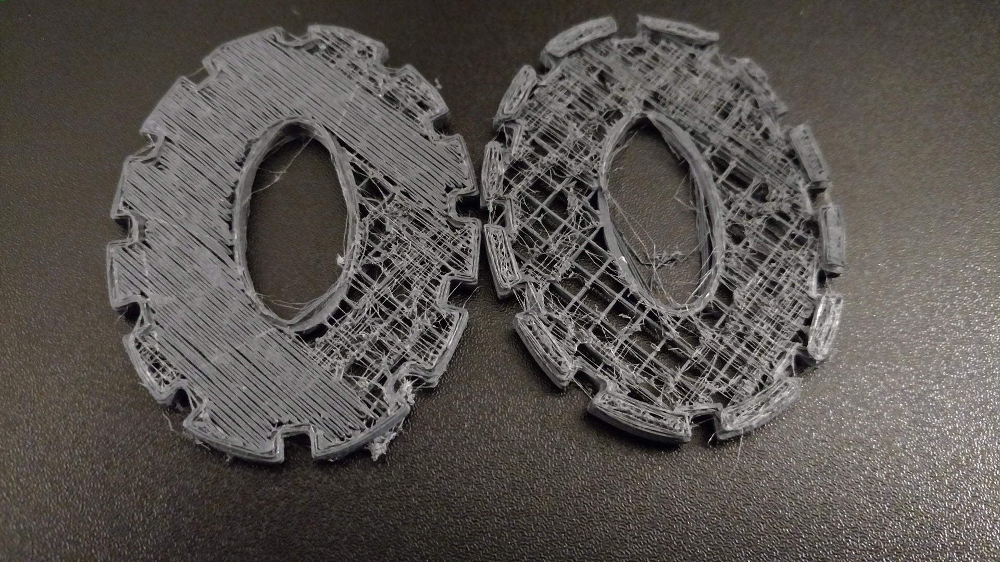
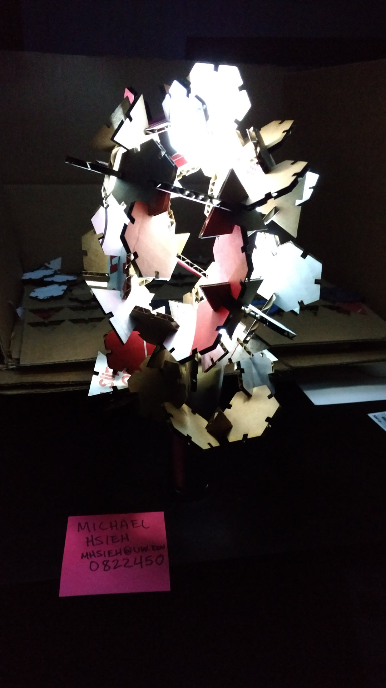

For this assignment, we were asked to create a lampshade for a light source (in my case a flashlight) using 3D printing techniques and lasercutting. The fabricated materials should also fit well enough on the lamp to stay connected under regular use. Part geometries were constructed using Rhino/Grasshopper. The laser-cut components were exported as Adobe Illustrator files to be cut, while the 3D-printed Parts were exported as .stls for printing using Dremel Digilab. All source files for this assignment can be located within the github repository.
The general steps that I took in this assignment were:I began this assignment by determining the geometry and dimensions of my flashlight in order to figure out how I might fit part geometry onto the existing design. Upon examination, the flashlight could roughly be approximated as a cylinder, where the bottom handle is represented by a nearly circular ellipse, and the light-emitting end could be created using an ellipse. The measured dimensions are as follows:
I decided to use hexagons again, but created triangle fit connectors in the hopes of better matching the resulting angles as I constructed the lampshade later. These files were relatively simple to create, since the .gh files created previously could be easily reused/modified for regular geometries. I chose to model the flashlight in Rhino as well, to better understand how I might fit parts to it. After baking in Grasshopper, I saved the files directly as .3dm files and .ai files. The .ai files could be opened directly in Illustrator and were cut using the same settings as previous assignments (25% speed, 100% power, 100% frequency) after arranging the cardboard and focusing the cutter.
The flashlight didn't need to be exactly recreated in Rhino, since I was initially only planning to create a cover over the light-emitting end, so even though the actual shape was more complex, I simplified it to a loft between 2 ellipses, since that would suffice for the cap.
After creating the flashlight model, I needed to create the cap which would cover it and actually do something with the light. I went through a couple of iterations of the cap, realizing shortcomings along the way:
Issues that ran into along the way were in figuring out to properly align the slots to an elliptical curve, rather than a regular shape like the previous polygons or a circle. Additionally, after cutting out the rectangular slots for press fit (which were tangential to the curve of the ellipse at the edge), I struggled to figure out what math would be required to get an ellipse that perfectly met these rectangular slots (so that the designed overhang would actually allow the press fit pieces connect. Unless I modified the rectangular slots to have curved edges, it would need to be hard coded, which was a bit of a disappointment. Similarily, trying to run chamfers or fillets using Grasshopper would've reshaped the edges of the cap and made it difficult to create an elliptical cutout to keep the overhang working, so I left the cap unchamfered and unfilleted (which may have led to difficulties in assembly later). Ultimately, I exported the .stl files for 3D printing using Dremel Digilab after rotating them in Rhino to reduce the need for supporting material. I duplicated the part in case there were any issues + iterated before printing to see if there would be any difference.
Similar to previous assignments, I checked out one of their laptops, along with a dongle so that the Epilog laser cutter could be connected to the laptop. Things went much smoother since I transferred my .ai files to the laptop. No additional work was required to prepare the files for cutting. I then turned on the cutter, the exhaust, and the air assist to ensure that there would be no malfunctions with the printer. After the printer turned on, I adjusted the work area with my cardboard resting on it so that the laser head was focused, using a triangular tool to rest directly upon the cardboard. On the laptop, I entered the print dialog, selected the appropriate laser cutter from the possible printers, and entered its preferences, where I set the speed to 25%, power to 100%, and frequency to 100%. I also set the piece size to match the printer work area. At this point I lifted the hood of the laser cutter, and hit the print button twice on the laptop to send the job to the laser cutter. I ran the cutter with the hood up to see that the cuts were where I intended them to but, then cancelled the job and sent the commands through the laptop again, before lowering the hood and running the actual print job. After completing the cuts, I turned off the laser cutter and the air assist/exhaust and returned the laptop to the MILL staff.
I opened my .stl file in Dremel Digilab and selected settings as below (I also set the printer device that I would be working in). After previewing and ensuring things looked right (excluding minor size differences between the Rhino model and the Digilab estimated size), I saved the .gcode to a USB drive. I then asked the MILL staff to open the storage room so I could retrieve PLA filament and located an empty 3D printer to use. I loaded the filament reel onto the rack, had the printer heat up and expel the previous filament, loaded my own filament into the nozzle and waited until the new filament was coming out nicely. I then inserted my USB drive, copied the file to the printer and attempted to print after setting the temperature of the nozzle to 230C. While the nozzle pre-heated to the temperature again, I applied a moderate amount of glue stick to the printing plate so that my print would not lift up from the plate.
 The initial print ran into some errors, where some of the filament lifted up from the plate, so I thought I might have put too little glue and ran the print again. However, although the print didn't lift off this time, something went wrong and I saw that the filament had globbed up and the print was definitely not looking like the proper part. I decided to try changing the infill settings as well as the support settings to brim, in the hopes that adhesion would not play a factor at all, and to ensure that my part was strong enough to avoid damage during press fit. I ran out of time at this point and had to return another day. I made iterations on the part design and tried reprinting again. Plate adhesion was much better in my next run, but the 3D print itself didn't seem to match the settings, with no infill actually being created, just major gridlines. However, the part still worked for the purposes of this assignment and I will work out kinks in future (since I essentially ran out of time to use the makerspace).
 My working assumption was that the new triangle connectors I had created would allow me to easily place the hexagons into a ball around the flashlight cap, which would be wedged and press fit against the flashlight itself. However, I did not take into account the difference in regular polygon radius between the hexagon and triangles and where the actual slots fit. Additionally, the simplification/assumptions I made about the flashlight head seemed to backfire, as the press fit of the cardboard against the flashlight edges did not really provide a secure fit. Since the parts were not fitting together in a regular shape that I could recognize, I tried to maintain as much symmetry as possible and began assembling parts above the light source to generate some kind of pattern.
